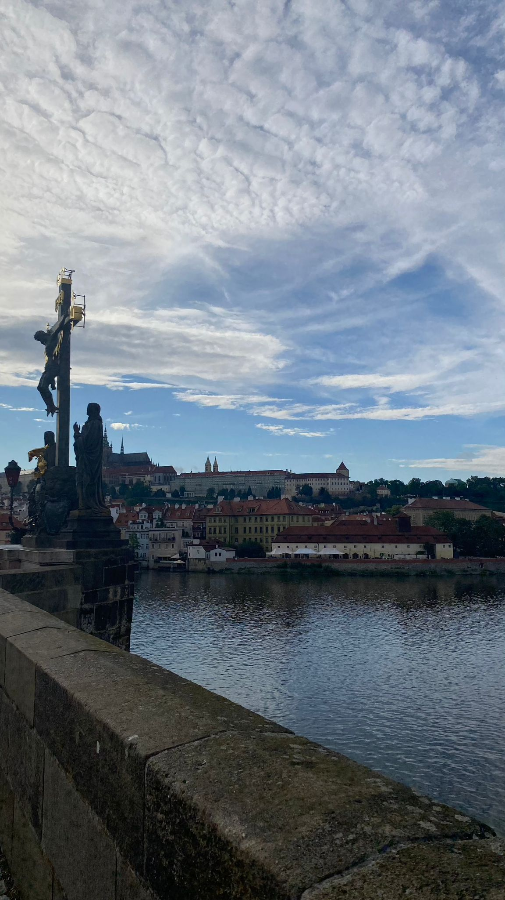
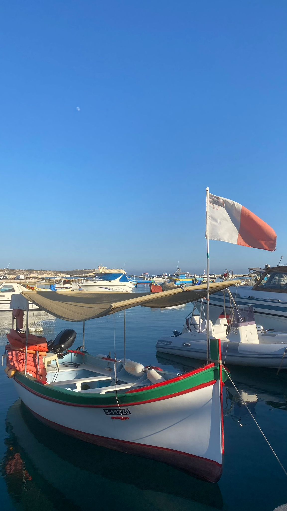

Berlin is the vibrant capital of Germany, known for its rich history, diverse culture, and modern architecture.
The city is a hub for arts and music, boasting iconic landmarks like the Brandenburg Gate, Berlin Wall, and Museum Island.
Berlin’s dynamic neighborhoods, such as Kreuzberg and Mitte, offer a mix of local boutiques and culinary experiences.
The city's history, from its Prussian roots to its role during the Cold War, shapes its unique character.

Prague
Prague, the capital of the Czech Republic, is renowned for its stunning medieval architecture and charming cobblestone streets.
The city features a mix of Gothic, Baroque, and Renaissance styles, with highlights including the Prague Castle, Charles Bridge,
and the Astronomical Clock. Known as the "City of a Hundred Spires," Prague offers a rich cultural scene and delicious cuisine,
making it a popular destination for travelers.

Malta
Malta is a small island nation in the Mediterranean Sea, famous for its stunning coastlines, historic sites, and vibrant culture.
With a history dating back thousands of years, Malta boasts ancient temples, medieval fortifications, and baroque architecture.
The capital city, Valletta, is a UNESCO World Heritage site filled with museums, churches, and gardens.
Malta's warm climate, crystal-clear waters, and diverse marine life make it a popular destination for beachgoers and scuba divers.